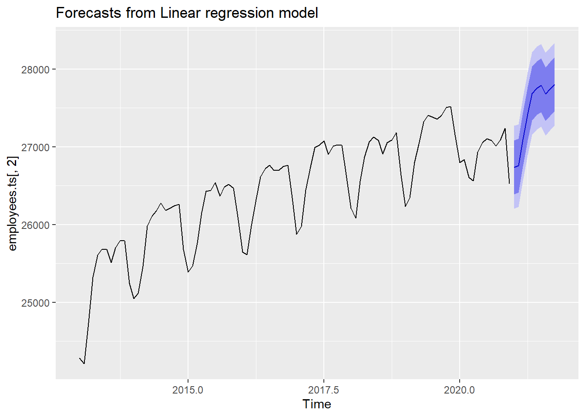

6.2 Regression 모델
회귀 모델은 선형 회귀(Linear Regression), 비선형 회귀,(Non-linear Regression) 로지스틱 회귀(Logistic Regression) 등의 방법이 있다. 회귀 모델은 종속변수와 독립변수와의 관계를 가장 잘 나타내는 회귀방정식을 도출하여 미래 데이터에 대한 예측치를 생성하는 방법으로 아직도 머신러닝 알고리즘 중에 가장 많이 사용되는 알고리즘 중에 하나이다.8
본 문서에서는 R에서 회귀 알고리즘을 구현하는 방법을 다루지는 않고 시계열 데이터의 회귀 알고리즘을 적용하는 방법에 대해 설명하겠다. 시계열 데이터의 회귀 모델은 두가지로 구분할 수 있다. 첫번째는 두가지이상의 시계열 데이터(Multivariate) 간의 회귀 모델과 한가지 시계열 데이터(Univariate)의 시간에 따른 회귀모델이다. 사실 첫번째 모델의 경우는 일반적 회귀모델과 큰 차이는 없지만 사용하는 함수는 시계열 패키지에서 따로 제공된다. 두번째 모델의 경우는 시계열 데이터의 특성인 추세(trend)와 계절성(season), 반복성(cycle)을 회귀에 반영한다는 점에서 일반적 회귀와는 차이가 있다.
6.2.1 시계열 선형회귀(Timer Series Linear Regression) 모델
시계열 선형 회귀 모델은 데이터간의 관계를 가장 잘 나타내는 직선(Linear)을 산출하여 미래 데이터를 예측하는 방법이다. 선형 회귀 모델은 선형 방정식으로 표현되는데 직선의 기울기(Slope)와 Y 축 절편(Intercept)의 계수(Coefficient)가 산출된다. 시계열 데이터의 선형 회귀를 위해서 forecast 패키지에서 tslm()함수, timetk 패키지의 plot_time_series_regressino() 함수(stats::lm() 함수를 사용하여 선형회귀 결과를 ploting하는 함수), modeltime 패키지(timetk 패키지의 모델링 패키지)의 linear_reg() 함수 등을 사용할 수 있다.
- tslm 함수(forecast 패키지)
forecast 패키지에서 제공하는 tslm() 함수는 시계열 선형회귀 모델을 위한 함수이다. tslm() 함수는 lm() 함수의 래퍼 함수(Wrapper)로 사용법은 비슷하고 시간축이 독립변수에 포함되지 않은 두개 혹은 두개 이상의 시계열 객체에 대한 선형회귀는 lm() 함수의 결과와 같다. 즉 시계열 데이터이지만 독립변수 시간이 포함되지 않는다면 시계열 데이터로써의 특성이 적용되지 않은 양 데이터간의 특성정보만으로 선형회귀 방정식이 얻어진다.
반면 시간을 독립변수로 하여 선형회귀 모형을 적용하기 위해서는 ‘trend,’ ‘season’ 키워드를 함수식의 독립변수에 적용해 줌으로써 시간에 대한 선형회귀 방정식을 얻을 수 있다. ‘trend’는 시계열적인 추세를 반영하여 선형회귀 모델을 만들고 ’season’은 시계열의 계절성을 반영하여 회귀모델을 만들게 되는데 두가지를 모두 고려할 때는’+’ 기호로 연결하여 사용할 수 있다. 이 과정에서 추가적인 독립변수를 추가할 수도 있는데 독립변수를 추가할 때도 ‘+’ 기호를 사용하여 회귀모델을 만들 수 있다.
# 전체 학생수 예측 모델을 추세를 반영하여 생성
student.ts.lm <- tslm(students.total.ts[,3] ~ trend, data = students.total.ts)
summary(student.ts.lm)##
## Call:
## tslm(formula = students.total.ts[, 3] ~ trend, data = students.total.ts)
##
## Residuals:
## Min 1Q Median 3Q Max
## -378680 -174765 -58 210909 243604
##
## Coefficients:
## Estimate Std. Error t value Pr(>|t|)
## (Intercept) 4402542 91504 48.11 < 2e-16 ***
## trend -88325 6967 -12.68 5.12e-11 ***
## ---
## Signif. codes: 0 '***' 0.001 '**' 0.01 '*' 0.05 '.' 0.1 ' ' 1
##
## Residual standard error: 207300 on 20 degrees of freedom
## Multiple R-squared: 0.8893, Adjusted R-squared: 0.8838
## F-statistic: 160.7 on 1 and 20 DF, p-value: 5.119e-11student.ts.lm %>% forecast() # tslm 함수로 생성된 모델을 forecast()함수를 통해 예측값을 생성## Point Forecast Lo 80 Hi 80 Lo 95 Hi 95
## 2021 2371064 2070723 2671405 1898355 2843772
## 2022 2282739 1979011 2586467 1804699 2760779
## 2023 2194414 1887058 2501769 1710664 2678163
## 2024 2106089 1794874 2417304 1616265 2595912
## 2025 2017763 1702466 2333061 1521514 2514013
## 2026 1929438 1609843 2249033 1426426 2432451
## 2027 1841113 1517015 2165212 1331013 2351214
## 2028 1752788 1423989 2081588 1235288 2270288
## 2029 1664463 1330773 1998153 1139266 2189660
## 2030 1576138 1237376 1914899 1042959 2109317student.ts.lm %>% forecast() %>% autoplot()
student.ts.lm <- tslm(students.total.ts[,5] ~ + trend, data = students.total.ts) # 초등학생 학생수를 예측모델에 독립변수로 트랜드를 사용하는 선형 모델을 생성
student.ts.lm %>% forecast(h = 22) %>% autoplot()
student.ts.lm <- tslm(students.total.ts[,5] ~ students.total.ts[,4] + trend, data = students.total.ts) # 초등학생 학생수를 예측모델에 독립변수로 유치원 학생수와 트랜드를 사용하는 선형 모델을 생성
student.ts.lm %>% forecast(h = 22) %>% autoplot()위의 예제에서 사용한 데이터는 연도별 학생수의 합계이다. 이 데이터와 같은 연도별 데이터는 계절성이 존재하지 않기 때문에 season 키워드를 사용하면 아래와 같이 에러를 낸다.
student.ts.lm <- tslm(students.total.ts[,3] ~ trend + season, data = students.total.ts)## Error in tslm(students.total.ts[, 3] ~ trend + season, data = students.total.ts): Non-seasonal data cannot be modelled using a seasonal factor전체 취업자수와 교육서비스업 취업자수에 대한 선형회귀분석 모델과 plot은 다음과 같다.
# 전체 취업자수를 추세(trend)만으로 선형 회귀분석
employee.total.ts.lm <- tslm(employees.ts[,2] ~ trend, data = employees.ts)
summary(employee.total.ts.lm)##
## Call:
## tslm(formula = employees.ts[, 2] ~ trend, data = employees.ts)
##
## Residuals:
## Min 1Q Median 3Q Max
## -1256.4 -264.1 119.9 350.6 525.7
##
## Coefficients:
## Estimate Std. Error t value Pr(>|t|)
## (Intercept) 25430.605 85.545 297.28 <2e-16 ***
## trend 20.394 1.531 13.32 <2e-16 ***
## ---
## Signif. codes: 0 '***' 0.001 '**' 0.01 '*' 0.05 '.' 0.1 ' ' 1
##
## Residual standard error: 415.8 on 94 degrees of freedom
## Multiple R-squared: 0.6536, Adjusted R-squared: 0.6499
## F-statistic: 177.3 on 1 and 94 DF, p-value: < 2.2e-16employee.total.ts.lm %>% forecast() # tslm 함수로 생성된 모델을 forecast()함수를 통해 예측값을 생성## Point Forecast Lo 80 Hi 80 Lo 95 Hi 95
## Jan 2021 27408.79 26860.89 27956.69 26565.89 28251.69
## Feb 2021 27429.18 26880.94 27977.43 26585.75 28272.62
## Mar 2021 27449.58 26900.97 27998.18 26605.59 28293.56
## Apr 2021 27469.97 26921.01 28018.94 26625.43 28314.51
## May 2021 27490.36 26941.03 28039.70 26645.25 28335.48
## Jun 2021 27510.76 26961.05 28060.47 26665.07 28356.45
## Jul 2021 27531.15 26981.06 28081.25 26684.87 28377.43
## Aug 2021 27551.55 27001.06 28102.03 26704.66 28398.43
## Sep 2021 27571.94 27021.06 28122.82 26724.45 28419.43
## Oct 2021 27592.33 27041.05 28143.62 26744.22 28440.45employee.total.ts.lm %>% forecast() %>% autoplot()
# 전체 취업자수를 추세(trend)와 계절성(season)으로 선형 회귀분석
employee.total.ts.lm <- tslm(employees.ts[,2] ~ trend + season, data = employees.ts)
summary(employee.total.ts.lm)##
## Call:
## tslm(formula = employees.ts[, 2] ~ trend + season, data = employees.ts)
##
## Residuals:
## Min 1Q Median 3Q Max
## -675.70 -42.60 76.66 147.08 312.95
##
## Coefficients:
## Estimate Std. Error t value Pr(>|t|)
## (Intercept) 24850.616 96.043 258.744 < 2e-16 ***
## trend 19.457 0.919 21.171 < 2e-16 ***
## season2 1.168 123.798 0.009 0.99249
## season3 318.462 123.808 2.572 0.01189 *
## season4 629.005 123.825 5.080 2.29e-06 ***
## season5 869.174 123.849 7.018 5.63e-10 ***
## season6 919.342 123.880 7.421 9.13e-11 ***
## season7 935.260 123.918 7.547 5.14e-11 ***
## season8 803.429 123.962 6.481 6.13e-09 ***
## season9 854.597 124.013 6.891 9.94e-10 ***
## season10 890.516 124.071 7.177 2.75e-10 ***
## season11 898.809 124.135 7.241 2.07e-10 ***
## season12 385.477 124.207 3.104 0.00261 **
## ---
## Signif. codes: 0 '***' 0.001 '**' 0.01 '*' 0.05 '.' 0.1 ' ' 1
##
## Residual standard error: 247.6 on 83 degrees of freedom
## Multiple R-squared: 0.8915, Adjusted R-squared: 0.8759
## F-statistic: 56.86 on 12 and 83 DF, p-value: < 2.2e-16employee.total.ts.lm %>% forecast() # tslm 함수로 생성된 모델을 forecast()함수를 통해 예측값을 생성## Point Forecast Lo 80 Hi 80 Lo 95 Hi 95
## Jan 2021 26737.91 26392.65 27083.16 26206.34 27269.47
## Feb 2021 26758.53 26413.28 27103.78 26226.97 27290.09
## Mar 2021 27095.28 26750.03 27440.53 26563.72 27626.84
## Apr 2021 27425.28 27080.03 27770.53 26893.72 27956.84
## May 2021 27684.91 27339.65 28030.16 27153.34 28216.47
## Jun 2021 27754.53 27409.28 28099.78 27222.97 28286.09
## Jul 2021 27789.91 27444.65 28135.16 27258.34 28321.47
## Aug 2021 27677.53 27332.28 28022.78 27145.97 28209.09
## Sep 2021 27748.16 27402.90 28093.41 27216.59 28279.72
## Oct 2021 27803.53 27458.28 28148.78 27271.97 28335.09employee.total.ts.lm %>% forecast() %>% autoplot()
# 교육분야 취업자수를 추세(trend)와 계절성(season)으로 선형 회귀분석
employee.total.ts.lm <- tslm(employees.ts[,3] ~ trend + season, data = employees.ts)
summary(employee.total.ts.lm)##
## Call:
## tslm(formula = employees.ts[, 3] ~ trend + season, data = employees.ts)
##
## Residuals:
## Min 1Q Median 3Q Max
## -106.764 -21.988 6.553 23.192 102.373
##
## Coefficients:
## Estimate Std. Error t value Pr(>|t|)
## (Intercept) 1789.2983 19.0207 94.071 <2e-16 ***
## trend 0.5628 0.1820 3.092 0.0027 **
## season2 -7.5628 24.5174 -0.308 0.7585
## season3 6.7493 24.5194 0.275 0.7838
## season4 19.0615 24.5228 0.777 0.4392
## season5 32.3737 24.5275 1.320 0.1905
## season6 41.3108 24.5336 1.684 0.0960 .
## season7 41.2480 24.5410 1.681 0.0966 .
## season8 31.0602 24.5498 1.265 0.2093
## season9 33.1224 24.5599 1.349 0.1811
## season10 33.0595 24.5714 1.345 0.1821
## season11 36.3717 24.5842 1.479 0.1428
## season12 27.5589 24.5983 1.120 0.2658
## ---
## Signif. codes: 0 '***' 0.001 '**' 0.01 '*' 0.05 '.' 0.1 ' ' 1
##
## Residual standard error: 49.03 on 83 degrees of freedom
## Multiple R-squared: 0.204, Adjusted R-squared: 0.0889
## F-statistic: 1.772 on 12 and 83 DF, p-value: 0.06634employee.total.ts.lm %>% forecast() # tslm 함수로 생성된 모델을 forecast()함수를 통해 예측값을 생성## Point Forecast Lo 80 Hi 80 Lo 95 Hi 95
## Jan 2021 1843.893 1775.518 1912.268 1738.621 1949.165
## Feb 2021 1836.893 1768.518 1905.268 1731.621 1942.165
## Mar 2021 1851.768 1783.393 1920.143 1746.496 1957.040
## Apr 2021 1864.643 1796.268 1933.018 1759.371 1969.915
## May 2021 1878.518 1810.143 1946.893 1773.246 1983.790
## Jun 2021 1888.018 1819.643 1956.393 1782.746 1993.290
## Jul 2021 1888.518 1820.143 1956.893 1783.246 1993.790
## Aug 2021 1878.893 1810.518 1947.268 1773.621 1984.165
## Sep 2021 1881.518 1813.143 1949.893 1776.246 1986.790
## Oct 2021 1882.018 1813.643 1950.393 1776.746 1987.290employee.total.ts.lm %>% forecast() %>% autoplot()선형 회귀분석을 시행할 때 주의해야 할 점은 잔차가 백색 잡음이어야 한다는 점이다. 잔차의 자가회귀성이 존재하는 경우는 시계열적 특성을 여전히 지니고 있기 때문에 이를 제거할 필요가 있다. 다만 이 예측은 ‘잘못된’ 것은 아니나 예측구간이 커지기 때문에 비효율적 예측 모델이 된다.9
아래의 예에서 보면 전체 학생수를 추세에 의해 선형 회귀분석을 시행한 경우 잔차는 자기 상관성을 지니고 있음을 볼 수 있다. checkresiduals() 함수를 사용하여 확인하는데 plot만 봐도 백색잡음이 아님을 확인할 수 있지만 백색잡음 테스트인 Breusch-Godfrey 테스트 결과(checkresiduals() 함수는 회귀모델에 대해서는 Breusch-Godfrey 테스트를, 나머지는 Ljung-Box 테스트를 시행한다.)의 p-value가 0.05보다 작기 때문에 자기상관성이 존재하여 백색잡음으로 볼 수 없다.
checkresiduals(tslm(students.total.ts[,3] ~ trend, data = students.total.ts))
##
## Breusch-Godfrey test for serial correlation of order up to 5
##
## data: Residuals from Linear regression model
## LM test = 16.435, df = 5, p-value = 0.005707checkresiduals(tslm(students.total.ts[,5] ~ + trend, data = students.total.ts))##
## Breusch-Godfrey test for serial correlation of order up to 5
##
## data: Residuals from Linear regression model
## LM test = 16.827, df = 5, p-value = 0.004839이기준 외, 인구지형변화에 따른 머신러닝 기반 고등교육 계열별 수요예측 모형 개발(2020), 한국교육개발원↩︎